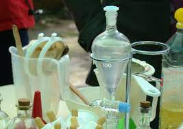

Los perfumes son el resultado de una composición de esencias naturales y/ o sintéticas que al conjuntarse entre sí, dan como resultado un aroma patentado único y distintivo para cada marca. Son justamente dichas sustancias aromáticas concentradas que componen cada fórmula, las que se conocen como fragancias. Éstas, a diferencia de los perfumes, suelen venderse en casas especializadas o naturistas, pues se trata de las materias primas para crear las fórmulas comerciales.
Es así como, dependiendo de la serie de fragancias empleadas, los perfumes pueden clasificarse de acuerdo a su estructura como monolíticos, los cuales están creados con una o muy pocas esencias; o bien, por múltiples fases, dividiéndose jerárquicamente a manera de pirámide olfativa.
Mucho han cambiado los procesos de fabricación de colonias y otras fragancias desde que los griegos empezaron a elaborarlas aunque fueran los árabes los perfeccionaron mejor que nadie los conocimientos de las culturas que los precedieron utilizando alambiques para destilar alcohol como soporte de las esencias con los que obtuvieron refinados perfumes como el almizcle, la algalia y el Agua de Rosas. La alquimia dio paso a los procesos químicos en el arte de la perfumería.
Los adelantos científicos y técnicos han permitido realizar fórmulas cada vez más complejas que antes se llevaban a cabo únicamente mediante la experimentación.
Hay diversos procedimientos de fabricación según los ingredientes que se utilicen. Los más comunes son:
-Destilación
Este método, el más empleado especialmente para flores, plantas y hierbas, consiste en separar por evaporación los sólidos de los diferentes componentes volátiles de una mezcla. La parte del vegetal que contiene la esencia (raíz, hojas, flores, corteza (árbol), etc.) se machaca y se introduce en un alambique.
Se añade el agua suficiente para que la materia esté completamente bañada y, al cabo de algunas horas de maceración, se procede a la destilación. El vapor de agua arrastra los elementos aromáticos hacia la columna de destilación, donde son enfriados y recogidos en un vaso en el que se separan fácilmente el agua y la esencia.
El agua que sale arrastra un poco de esencia en disolución o en suspensión por lo que se vuelve a enviar al alambique para aprovecharla en operaciones sucesivas.
-Expresión
Este proceso se utiliza para los frutos, de cuya corteza se exprimen sus esencias tras separarla del fruto, agujerearla y comprimirla mecánicamente. El extracto obtenido se decanta y se filtra sobre papel mojado para separar las partes acuosas de los aceites esenciales.
Este tratamiento en frío es utilizado particularmente con naranjas, limones, la cidra y otros cítricos, cuyo aroma muy fresco no resistiría el calor de la destilación.
-Extracción o «enfleurage»

Este proceso consiste en poner las plantas, normalmente flores más delicadas, en contacto con disolventes que absorben los perfumes por contacto.
Tradicionalmente esta técnica era utilizada con grasas de animales como disolvente pero han sido reemplazadas por disolventes volátiles que se eliminan por evaporación. Al mezclarlo con alcohol, calentarlo y enfriarlo después, se obtienen los compuestos vegetales. Posteriormente se evapora el alcohol.
-Maceración
La obtenión de fragancias por maceración es el método más antiguo. Aunque en desuso, esta técnica se utilizaba con flores muy frágiles como la flor de azahar, el jazmín.
Los pétalos se recogían a mano, se disponían en una fina capa sobre una película de grasa animal encima de una plancha de vidrio. A las 24 o 48 horas se retiraban minuciosamente los pétalos y así varias veces hasta la saturación de las grasas. El resultado era una pomada cargada de aromas que se lavaba con aguardiente de vino para obtener infusiones.